Verslag bedrijvenpark Deltaweg

We hebben allemaal voor dit project gekozen, omdat we alle drie iets wilde doen met architectuur was dit een goed project om op gebied meer ervaring te krijgen. In dit project van de Gemeente Goes gingen we het bedrijvenpark ontwerpen aan de Deltaweg met de hoofdvraag: “Hoe ontwerp je een klimaat adaptief bedrijvenpark aan de Deltaweg?”
We zijn begonnen met het onderzoeken wat een klimaat adaptief klimaatbeleid eigenlijk is en of er al klimaat adaptieve bedrijvenparken bestaan. We hebben ook de huidige plannen van de Gemeente Goes goed doorzocht. Vervolgens hebben we eisen gesteld aan ons ontwerp om richtlijnen te vormen. Toen zijn we begonnen met het uitwerken waarbij we eerst hebben gekeken naar het oplossen van wateroverlast, hitte en droogte. Daarna zijn we knelpunten gaan onderzoeken om als volgt onze ideeën te bedenken. Nadat we die hadden uitgewerkt zijn we naar materiaal opties gaan kijken en in de toekomst proberen te kijken voor de mogelijke bedrijven die hier zouden willen vestigen. Al dit hebben we samen in website gezet en een 3D-tekening gemaakt om onze toevoegingen in beeld te zetten.
Al met al hebben we vier toevoegingen bedacht; groendaken, water opvangende tegels, zonnepanelen en water tanks onder de grond. De zonnepanelen worden niet alleen voor hun normale functie gebruikt, maar ook om water naar de gewenste locatie te leiden. Dit project hebben we dan helemaal bij elkaar gezet op de zelfgemaakte website.
Wij zijn Mohab Ahmed, Thomas Snoek en Christiaan de Wet van Technasium op Pontes Het Goese Lyceum. Wij hebben voor het project “bedrijvenpark Deltaweg” gekozen. Wij gaan voor de Gemeente Goes ideeën bedenken om het nieuwe bedrijvenpark aan de Deltaweg duurzamer in te richten.
Wij hebben de taken verdeeld aan de hand van een scrumbord (zie afbeelding 1). Op dit scrumbord staat duidelijk aangegeven wie waarmee bezig is en wat er nog gedaan moet worden. Dit maakt het samenwerken veel makkelijker.
Dit project is gekoppeld aan het beroep stedenbouwkundige. De opleiding die je nodig hebt om stedenbouwkundige te worden, is stedenbouwkundig ontwerpen. Deze opleiding kan je bijvoorbeeld volgen op de Saxion in Deventer.
Voor dit project bedanken wij meneer Groot voor het begeleiden van de opdracht. Ook bedanken wij meneer Zijlema om ons deze opdracht aan te bieden en ons de nodige informatie te geven over deze opdracht.
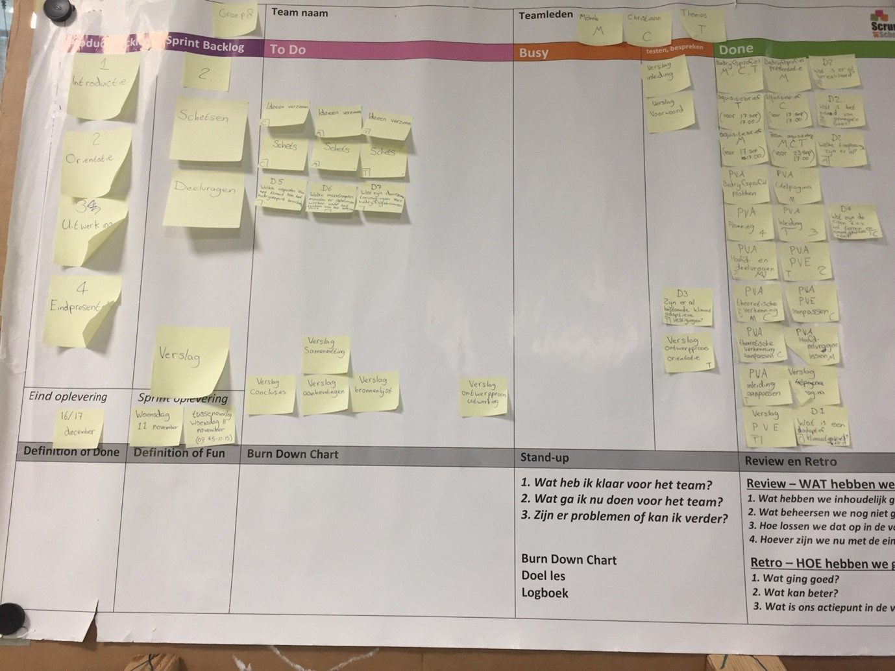
Afbeelding 1: Het scrumbord
Klik op een onderwerp om daar gelijk naartoe te gaan.
1. Samenvatting
2. Voorwoord
3. Inleiding
4. Programma van eisen
5. Ontwerpproces
5.1. Hoofdvraag en deelvragen
5.2. Oriëntatie
5.2.1. Een Adaptief klimaatgebied
5.2.2. Het bestaande beleid van Gemeente Goes
5.2.3. Hoe zien bestaande klimaat adaptieve bedrijfsparken eruit?
5.2.4. Wat zijn de eisen van de gemeente t.a.v. het terrein en klimaat adaptief beleid?
5.3. Uitwerking
5.3.1. Welke aspecten van het klimaat kan het bedrijvenpark beïnvloeden?
5.3.2. Tegen wat moeten er maatregelen genomen worden voor het inrichten van het bedrijvenpark?
5.3.3. Welke ideeën hebben wij verzonnen om het bedrijvenpark in te richten?
5.3.4. Ik duurzaam materiaal kan er gebruikt worden voor het maken van het bedrijvenpark?
5.3.5. Hoe kunnen we zo duidelijk mogelijk ons idee laten zien aan toekomstige ondernemers?
6. Conclusie
7. Aanbevelingen
8. Bronnenlijst
9. Bijlagen
9.1. Bedrijfsprofiel
9.1.1. Ondernemingsvorm
9.1.2. Organisatiestructuur/opleidingen
9.1.3. Grootte bedrijf
9.1.4. Producten/diensten in relatie tot de 7 bètawerelden
9.1.5. Visie en doelen
9.1.6. Klantenkring/orderpakket
9.1.7. Waarom is het bedrijf geschikt voor het technasium?
9.1.8. Bronnen
9.2. Website
9.3. 3D-model
De gemeente Goes wilt een nieuw bedrijvenpark ontwikkelen aan de Deltaweg in Goes. Voor dit bedrijvenpark wilt de gemeente Goes dat de bedrijven die zich daar gaan vestigen duurzaam worden ingericht. Door de klimaatverandering heeft de gemeente de vraag gekregen om hun nieuwe bedrijvenpark aan de Deltaweg klimaat adaptief in te richten. Klimaatverandering zorgt voor bijvoorbeeld wateroverlast en hitte. Dit is niet alleen een probleem voor de bedrijven, maar voor iedereen. Het gesprek over klimaatverandering is recent ook redelijk vaak in het nieuws.
Wij hebben gekozen om de opdrachtgevers, meneer P. Zijlema en mevrouw M. van den Bergh, te helpen met dit probleem. De hoofdvraag die we hebben opgesteld om aan het einde van het project te kunnen beantwoorden is: “Hoe ontwerp je een klimaat adaptief bedrijvenpark aan de Deltaweg?”. Onze ideeën presenteren we aan het einde van het project in onze eindpresentatie (zie afbeelding 2).
In ons verslag vindt u als eerste het programma van eisen. Hierin staan de eisen die wij en de opdrachtgever hebben gesteld aan ons uiteindelijke ontwerp. Vervolgens komt het ontwerpproces met daarin het gehele proces van oriëntatie tot uitwerking. Daarna komen de conclusies die we hebben kunnen trekken naar aanleiding van het proces, gevolgd door de aanbevelingen die we hebben opgesteld voor de opdrachtgever. Als laatst komen de bronnenlijst en de bijlagen met verdere informatie over de informatie die we hebben gebruikt.

Afbeelding 2: Titeldia van de eindpresenatie
Hieronder staan de eisen die we hebben gesteld aan de ideeën die hebben verzonnen.
- Ons idee moet ten minste een oplossing zijn tegen wateroverlast en hitte/droogte.
- Het gebouw en de ruimte eromheen moeten we klimaat adaptief inrichten.
- Het idee moet duidelijk zijn vormgegeven met behulp van een maquette of ander model.
- Ons idee mag niet ten koste gaan van de plannen van de bouw van de bedrijven die zich daar gaan vestigen.
- We moeten minimaal 3 ideeën hebben voor een klimaat adaptief kavel.
- De gebouwen moeten regenwater opvangen om het algemene waterverbruik te verlagen.
- De zonnepanelen moet goed gepositioneerd zijn zodat de elektriciteit op de meest effectieve wijze opgewekt kan worden.
- Het bedrijvenpark moet samengevoegd worden met de omgeving. De omliggende natuur moet geïntegreerd worden met het bedrijvenpark.
Hieronder staan alle deelvragen en antwoorden die behoren tot het ontwerpproces waarmee we tot ons eindontwerp zijn gekomen.
Onze hoofdvraag is:
Hoe ontwerp je een klimaat adaptief bedrijvenpark aan de Deltaweg?
Hieronder vindt u een lijst met de deelvragen die wij hebben beantwoord:
- Wat is een adaptief klimaatgebied?
- Wat is het beleid van gemeente Goes voor het bedrijvenpark? Welke toepassingen zijn er al? Wat is er al gerealiseerd?
- Hoe ziet een klimaat adaptief grondgebied eruit? Zijn er al bestaande klimaat adaptieve vestigingen?
- Wat zijn de eisen van de gemeente t.a.v. het terrein en klimaat adaptief beleid?
- Welke aspecten van het klimaat kan het bedrijvenpark beïnvloeden?
- Welke maatregelen moeten er genomen worden voor het maken van het bedrijvenpark?
- Wat zijn duurzame toevoegingen voor bedrijfsgebouwen?
- Welk duurzaam materiaal kan er gebruikt worden voor het maken van het bedrijvenpark?
- Hoe kunnen we zo duidelijk mogelijk ons idee laten zien aan toekomstige ondernemers?
We zijn begonnen met de oriëntatie. Hier hebben we meer over het onderwerp geleerd door de eerste 4 deelvragen te onderzoeken.
Het klimaat verandert. Stormen verhevigen, regenval intensiveert en veroorzaakt overstromingen. Het kan ook tijdenlang kurkdroog zijn. Het aantal dieren- en insectensoorten neemt af. Door vervuiling, ontbossing en de toename van de CO₂-uitstoot warmt de aarde op. Dus is het hedendaags echt belangrijk om een gebouw klimaat-adaptief in te richten zodat het beschermd is tegen de toekomst. Een klimaat-adaptief gebouw kan zichzelf tegen wateroverlast en droogte beschermen.
Vanaf 2019 tot 2030 wordt ten westen van de Deltaweg een nieuw bedrijvenpark ontwikkeld. Dit bedrijvenpark moet op een duurzame wijze met de omgeving samengevoegd worden. Het omliggende bos kan dan benuttigt worden voor recreatieve mogelijkheden. Gemeente Goes heeft aan de hand van een beeldkwaliteitsplan richtlijnen gegeven waar aan het bedrijvenpark al zal moeten voldoen en wat voor identiteit het park moet uitstralen (zie blz. …). De inrichting van de kavels is ook gegeven op zo een manier dat het bedrijvenpark er aantrekkelijk uit ziet en daardoor ook bijdraagt aan een goede verblijfskwaliteit in de omgeving. De exacte locatie van het “Bedrijvenpark Deltaweg” ligt aan de aantakking van de Deltaweg op de A58. Het Poelbos, de Verbartelweg en de Anthony Fokkerstraat begrenzen de noordelijke zijde. Aan de westerzijde grenst de Sinoutkerkseweg.
Oorspronkelijk bestond het gebied uit niet meer dan een stuk grond en veelvoorkomende kleine poelen die door vee als drinkwater werd benuttigt. Over dit gebied zijn nu twee bossen gegroeid: Het Poelbos en het Arendsbos. De karakteristieke poelen zijn onder de bomen nog intact gebleven. Destijds was het Poelbos aangelegd als een recreatief park voor omliggende dorpen en stad. Nu wordt als toevoeging het bedrijvenpark gemaakt en die wordt ook in combinatie met het Poelbos verwerkt. Twee belangrijke functionele aspecten zijn de hoogspanningsleidingen en de waterhuishouding. Alles is ingericht zodat regenwater makkelijk gebufferd kan worden zonder afwateringsysteem. Het complete verkeerstructuur is ook uitgewerkt. Fiets-, voetganger- en gemotoriseerd verkeer is allemaal al ontworpen en kleine ontsluiting in de weg is mogelijk voor de parkeerplaatsen op de bedrijf kavels.
Seringenstraat in Zwolle
Maatregelen:
- Zo min mogelijk gebruik van tegelsZo min mogelijk gebruik van tegels.
- Veel groen.
- Het afkoppelen van regenpijpen van het riool.
- Toepassingen van regentonschuttingen met een capaciteit van ongeveer 1000 liter water.
Parkeergarage Spinozalaan en Daltonschool in Voorburg Maatregelen:
- Dak aanpassingen om regenwater op te vangen bij beide gebouwen.
- Bij de parkeergarage is voor een polderdak gekozen omdat een polderdak meer water kan bergen dan een groendak.
- Op de school is een groendak aangelegd. Dit zorgt ervoor dat de klaslokalen in de school verkoeling krijgen op warme dagen.
De Gemeente Goes heeft een paar eisen gesteld waaraan ons ontwerp moet voldoen. Er moet in ons ontwerp ten minste één oplossing zijn die het kavel beschermt tegen wateroverlast, hitte en/of droogte. We moeten de gebouwen en ruimte eromheen inrichten zodat het bestemt is tegen ons steeds veranderend klimaat. We moeten het ontwerp overhandigen in de vorm van een maquette of ander model, bijvoorbeeld SketchUp tekeningen. Wij moeten ook het algemene waterverbruik van de kavels verlagen door een manier te vinden om regenwater op te vangen. Dit kan door gebruik te maken van een watertank of andere methodes. Als laatst moet het bedrijvenpark geïntegreerd worden met de bijliggende natuur. Zo wordt het nieuwe bedrijvenpark deel van de natuur en ziet het er niet alleen strak uit.
Na de oriëntatie zijn we ideeën gaan verzinnen voor het bedrijvenpark. Ook hebben we de overige deelvragen uitgewerkt.
Wateroverlast kan leiden tot water in het gebouw. Dat kan heel veel problemen opleveren, zoals als het een technologiebedrijf is, hebben ze waarschijnlijk opslagservers die veel belangrijke informatie bevatten, die allemaal verloren kunnen gaan bij een overstroming.
Hittestress (abnormaal hoge temperaturen) kan ook het bedrijvenpark negatief beïnvloeden. Hittestress kan leiden tot de dood van planten of de vertraging van de groei van planten. Het leidt ook naar hoge temperaturen in het gebouw, dat is nadelig voor de efficiency van de medewerkers en ook niet voor machines die niet kunnen opereren onder hoge temperaturen.
Om het bedrijvenpark in samenhang te krijgen met de natuur moeten er eerst een paar maatregelen genomen worden om dit tot leven te brengen. Het park moet niet alleen een eco-vriendelijk beeld geven, maar het moet functioneel ook werken. Er moet ook een systeem komen die helpt tegen droge tijden. Verder moet er natuurlijk ook gedacht worden aan de hitte die de bedrijfsgebouwen kan beïnvloeden. De gebouwen moeten daarom dus ook goed geïsoleerd zijn. De huidige poelen in het gebied moeten ook dichtgemaakt worden voordat er gebouwd kan worden. De verschillende dieren die in het gebied leven moeten ook in acht worden genomen worden, zodat het bedrijvenpark de dieren niet afschrikt.
Hieronder ziet u de ideeën die wij hebben bedacht om de bedrijvenparken klimaat adaptief in te richten:
- Een groendak op de daken van de gebouwen. Deze daken helpen om water op te nemen en door de extra laag isolatie heeft het ook een extra functie; het buiten houden van kou en het houd warmte binnen. Het dak is niet alleen praktisch, maar het geeft ook een milieu vriendelijke uitstraling.
- Klimaat adaptieve tegels hebben gaten tussen de tegels zodat regen wordt opgevangen en niet op de tegels blijft liggen. Deze water afvoerende tegels geleiden het water naar een water tank waar het dan weer hergebruikt kan worden.
- De zonnepanelen moeten zo veel mogelijk naar het zuiden gericht zijn en ze kunnen gebruikt worden als zonnewering/zonneschermen. Ook zouden ze met de zon kunnen meedraaien.
- Deze watertanks worden onder de grond gebouwd zodat al het water dat door de tegels wordt afgevoerd wordt opgeslagen. Dit is zodat het later hergebruikt kan worden. De tanks zitten onder de tegels zodat er geen complexe afvoeringssysteem gemaakt hoeft te worden.
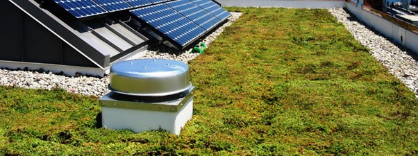
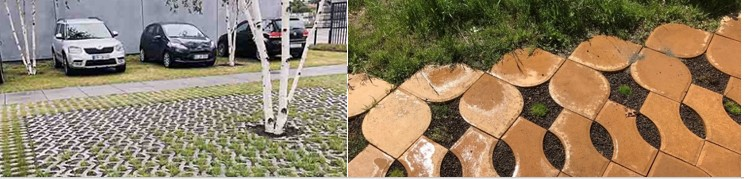
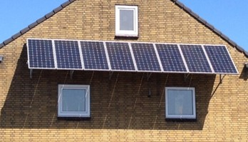

We hebben nu gefocust op het ontwerpen en de ideeën die we kunnen toevoegen, maar de keuze van materiaal is natuurlijk ook van belang. Het materiaal moet duurzaam zijn en ook een duurzame uitstraling hebben. Dus niet alleen praktisch maar ook visueel aantrekkelijk. Bouwstoffen die ons eerst te binnen schoten waren: hout, bamboe en gerecyclede metalen. Gemeente Goes heeft zelf ook een paar richtlijnen voor de bouw. Het gebruik van bijvoorbeeld beton, staal, glas, hout of baksteen is verwelkomd. “Hoogwaardig kunststof of metalen plaatmateriaal met een vlakke textuur en gedekte kleur is ook toegestaan. De bebouwing kent overwegend een donkere gedekte kleur en natuurlijk kleurgebruik. Golfplaat materiaal is zowel op het dak als op de gevel niet toegestaan. De toepassing van verticaal groen en verticale PV-panelen aan de representatieve zijdes van de gebouwen wordt gestimuleerd.” (Gemeente Goes, 2019) Na onderzoek bleek dat Hennep en kurk een goed isolatiemateriaal is. Hennep neemt veel CO2 in tijdens de groei. In tegenstelling tot onder isoleermiddelen zorgt Hennep niet voor huid- en ademhalingsproblemen. Kurk heeft als voordeel dat het 100% recyclebaar is. Het is ook bestendig tegen vocht. (Marlan, z.d.)
Gemeente Goes heeft ons een paar dingen aangeboden zoals het gebruik van een maquette om verschillende aspecten en ideeën daar aan toe te voegen. Zodat het niet alleen een concept is, maar dat het ook visueel uitlegt kan worden. Ons eerste idee was om ook een maquette te maken, maar later kwamen we op een beter idee om een duidelijke en overzichtelijke 3D-tekening te maken en de rest van ons project te verwerken in een website met hetzelfde thema als de huidige Gemeente Goes site. We waren begonnen met het uitkiezen van een perceel uit het verkavelingsplan. In overleg met de opdrachtgever zijn we tot een conclusie gekomen dat een gebouw aan de buitenste zijde een goede keuzen was om te demosteren hoe het waterleidingsysteem te werk zou gaan op het dak. Op de website komen verschillende voorbeelden en komt uitleg over onze ideeën. Dit verslag en de 3D-tekening wordt daar ook aan toe gevoegd. De website wordt de verzamelplaats voor al ons werk en is bedoeld om men gemakkelijk te herleiden naar het onderwerp naar keuze. Verder hebben we ook nog steeds nagedacht over het gebruik van een maquette, maar door het gebruik van een website was dat onhandig om te doen. Het was mogelijk om foto’s te maken van de maquette en die op de website te zetten, maar dat zo minder duidelijk zijn dan een 3D-tekening.
Aan de Deltaweg wil de Gemeente Goes en nieuw bedrijvenpark realiseren. De vestigende bedrijven moeten zich klimaat adaptief inrichten en bestendig zijn tegen water- en hitteoverlast. Verder moet het bedrijvenpark ook bij het omliggend bos passen. Door gebruik van bijvoorbeeld: planten, hout of bijpassende kleuren. Ons idee moest ook voldoen aan de verschillende eisen die wij hebben gesteld. De eerste eis is dat onze ideeën tegen wateroverlast en hitte/droogte kunnen. We hebben vooral op wateroverlast gelet, omdat dat een stuk prominenter is dan hitte en droogte in Nederland. Met de speciale tegels wordt dat snel en gemakkelijk geregeld. De ruimte om de gebouwen worden ook klimaat adaptief ingericht door gebruik van de groendaken, veel groen en de tegels. Onze ideeën worden vormgegeven met behulp van een 3D-tekening en een website om alle informatie in één gezamenlijke locatie te hebben. Ons idee hindert ook geen van de huidige plannen die daar worden uitgevoerd. We hebben samen vier ideeën bedacht voor een kavel. De groendaken helpen om water op te vangen en later hergebruikt kan worden. De zonnepanelen worden ook zo neergezet zodat ze effectief te werk kunnen gaan. Door middel van veel groen en hout wordt het bedrijvenpark samengevoegd met de omgeving.
We konden helaas niet met alles rekening houden, en daardoor zijn er kleine problemen die we niet hebben kunnen oplossen. Hier zijn deze aanbevelingen:
- Wij hebben vooral naar onze eigen ideeën gekeken waardoor we de materialen minder uitgebreid hebben uitgewerkt. Het is mogelijk op een uitgebreide keuzes te geven aan de bedrijven die hier willen vestigen en de voordelen van bepaalde materialen ook aan te tonen.
- De website die we hebben gemaakt hebben we niet volledig gelanceerd. We hebben hem kunnen lanceren met een programma genaamd github, maar dit betekent dat hij niet op de servers staan die de Gemeente Goes gebruikt voor hun website. Wij hebben enkel en alleen de website gemaakt, en dus verwachten we dat de opdrachtgever de website aanpast totdat hij duidelijk genoeg is.
- De juiste hoeveelheid en locatie van de water opvangende tegels en watertanks hebben wij niet uitgewerkt, omdat dat ook te maken heeft met de bebouwing ondergrond en dat hebben wij niet tot onze beschikking.
- Verder hebben we geen volledig design van de gebouwen ontworpen. Dus dat moet ook nog gedaan worden door de bedrijven die zich daar willen vestigen.
- Gemeente Goes. (2019, oktober 22). Beeldkwaliteitplan ‘Bedrijvenpark Deltaweg’. Goes: NXTLandscapes.
- Marlan. (z.d.). 7 duurzame bouwmaterialen en producten. Opgehaald van Marlan: https://www.marlan.com/7-duurzame-bouwmaterialen-en-producten/
- Ahmed, A.; Snoek, T.; Wet, C., de (2020, December 10). Deltaweg. Opgehaald van Deltaweg: https://deltaweg.github.io/
- Nasser, A. (2016, Juli 1). Water Tank. Opgehaald van 3D Warehouse: https://3dwarehouse.sketchup.com/model/3dbf47a9-002c-4370-8cfd-c0a7bdb5f8f2/Water-Tank
- Steden, G. (2019, April 7). Voorbeeldenboek Klimaatadaptieve Bouwprojecten . Opgehaald van issuu: https://issuu.com/groenesteden/docs/voorbeeldenboek_klimaatadaptieve_bo
Door: Mohab Ahmed, Thomas Snoek en Christiaan de Wet
Bedrijf: gemeente Goes
De ondernemingsvorm die bij de gemeente Goes hoort, is publiekrechtelijk rechtspersoon. Een door de overheid ingevoerde juridische constructie.
De organisatiestructuur van de gemeente Goes is een F-indeling. Dit houdt in dat deze afdeling zich bezighoudt met het toeleggen op bepaalde gelijksoortige handelingen of bewerkingen (zie afbeelding 3). 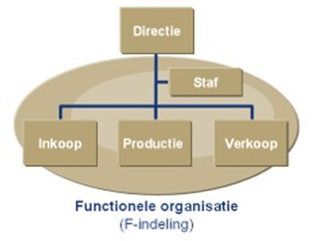
Afbeelding 3: Organisatiestructuur F-indeling
De opleiding die je nodig hebt om stedenbouwkundige te worden, is stedenbouwkundig ontwerpen. Deze opleiding kan je bijvoorbeeld volgen op de Saxion in Deventer.
Het bedrijf heeft 201 tot 500 medewerkers, het exacte getal is niet beschikbaar. De leeftijdsopbouw van deze medewerkers is onbekend.
Het beroep stedenbouwkundige hoort bij de bètawerelden lifestyle en design, omdat de inhoud van een stad ontworpen moet worden. De bètawereld mobiliteit en ruimte hoort er ook bij aangezien die bètawereld gaat over ruimte zo efficiënt mogelijk in te delen.
De doelen van de gemeente Goes zijn om de leefomgeving van Goes te verbeteren. Bijvoorbeeld het verbeteren van de sport en beweging en de wegen en woonbouw.
De klantenkring van de gemeente Goes is iedereen die in de gemeente Goes woont. De gemeente Goes bestaat uit ’s-Heer Arendskerke, ’s-Heer Hendrikskinderen, Kattendijke, Kloetinge, Wilhelminadorp, Wolphaartsdijk en natuurlijk Goes.
Gemeente Goes is een heel groot bedrijf met veel verschillende aftakkingen waardoor het zeer geschikt is voor o&o, omdat je veel opties hebt op een opdracht uit te maken.
- https://www.goes.nl/document.php?m=47&fileid=68701&f=f567912fbbc671757ef94f397e8d0c49&attachment=0
- https://www.goes.nl/document.php?m=47&fileid=130669&f=cc5cd8561f5574e8208519d8e679e14a&attachment=0
- https://www.goes.nl/bestuur-en-organisatie/ambtelijke-organisatie_43740/
- https://www.goes.nl/bestuur-en-organisatie/gemeenteraad_43739/
- https://nl.wikipedia.org/wiki/Rechtspersoon
- http://home.kpn.nl/IGWestra/samenvattingen/Samenvatting%20-%20Management%20&%20Organisatie%20-%20Eppink%20Melker%20Tack%20-%2001.pdf
Op deze website kan je de individuele ideeën zien die we hebben bedacht, je kan ook deze ideeën zien in het 3D model dat we hebben gemaakt en je kan ons ontwerpverslag lezen voor meer informatie.
U bevindt zich nu op deze website.
We hebben een 3D model gemaakt om onze ideeën beter uit te beelden. De volgende screenshots komen van het 3D model.
Dit is het gebouw in zijn geheel:
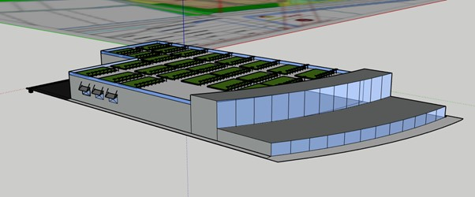
Dit is een screenshot van het dak van het gebouw. Hierop is het groendak en zijn de zonnepanelen goed te zien:
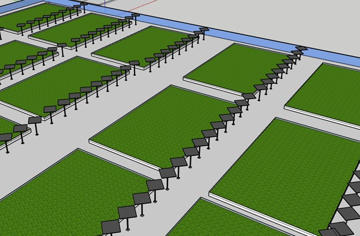
Dit is een foto van de zijkant waarop de ramen met zonnepanelen goed te zien zijn:
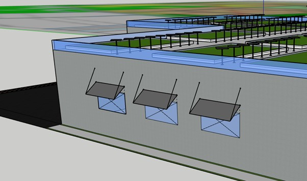
Hier ziet u de klimaat adaptieve tegels met de watertank eronder:
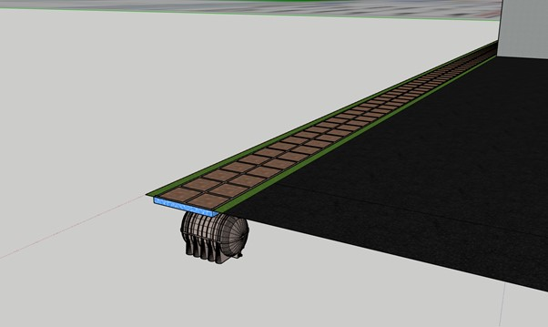
Hier zijn de foto’s van het model op zijn plaats in het bedrijvenpark:
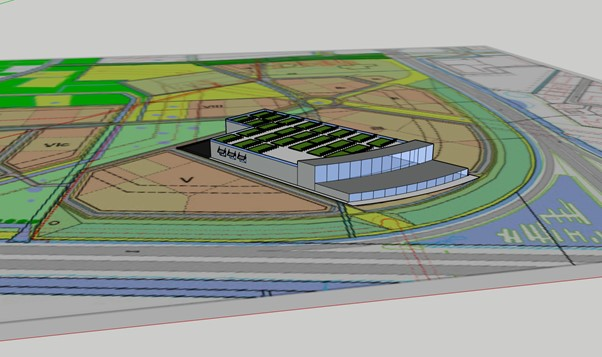
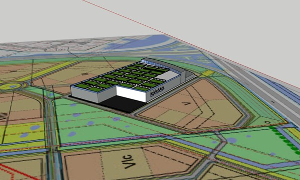
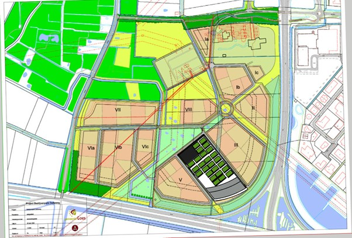